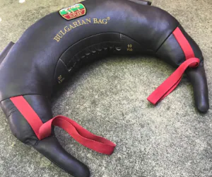

B805 · What makes a “killer death” grip?
Hello {first_name},
If you’re like me, the idea of doing isolated grip training sounds too boring for me to program it into my training. The Bulgarian Bag is the perfect way to train grip while doing dynamic, full body movements.
Here’s the main reason why:
Those handles…  Your hands will get sweaty. At the same time, you’re spinning the bag 360 degrees which creates a lot of force pulling the bag away from you. You have to squeeze hard and keep focus on maintaining that killer death grip or the bag will go flying.
Want to see what it looks like when you go all out to the point where forearms are clenching up? Click here to see high rep spins in action when I was challenged to test my max rep spins by the inventor of the bag. Watch from minute 8 if you’re short on time and notice how the set ends (hint: it was grip).
Want to develop your confidence and competence with this tool so you can train grip, along with your entire body in a new and exciting way? Come join the upcoming virtual Bulgarian Bag Certification I am running in August.
Bulgarian Bag Certification Date: August 27th Time: 7amPST to 4pmPST *Virtual Certification - no travel required
**Bonus 75 minute recorded workshop included when you sign up before August 1st. Click here to apply today.**
Train Intentionally, Mike Salemi
P.S. I’ve been using a Bulgarian Bag for about 12 years and I truly believe they are one of the best largely-unknown tools. I’ve tried tons of styles of training, but I stick with Bulgarian Bags. The best place to get the fundamentals down so you can make great use of a Bulgarian Bag is from a certification. Apply for my virtual Bulgarian Bag Certification coming up August 27th. Get the details and apply here.
|